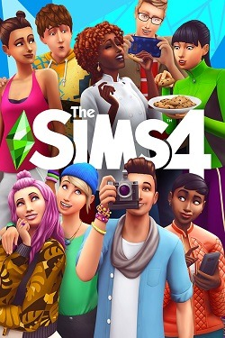
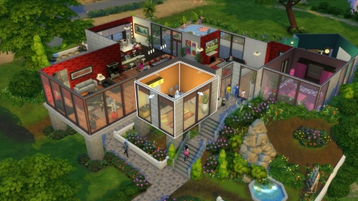
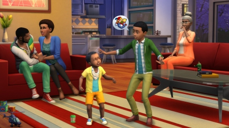
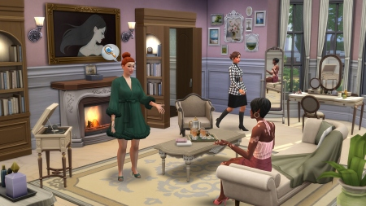
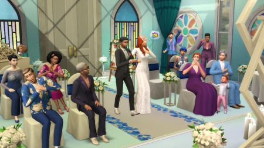

The Sims 4

Дата выхода: 02 сен. 2014
Жанр: Симуляторы
Разработчик: The Sims Studio
Издатель: Electronic Arts
Платформа: PC
Тип издания: Repack
Язык интерфейса: Русский, Английский, MULTi
Язык озвучки: Симлиш
Таблетка: Вшита (Anadius)
Системные требования:
ОС: Windows 7, 8, 10, 11 (64-bit)
Процессор: 1.8 GHz Dual Core
Оперативная память: 2 GB ОЗУ
Видеокарта: Shader Model 3
Место на диске: 75 GB
Установить The Sims 4
Инструкция по установке:
1. Скачайте установщик .torrent
2. Запустите файл установки в любом удобном Torrent-Клиенте
3. Установите .exe файл и запустите его
4. Следуйте инструкции внутри установщика
Размер файла: 1TB
Описание игры
Знаменитый симулятор жизни The Sims стал еще более реалистичным! Персонажи теперь еще разумнее, их внешность еще уникальней, эмоций еще больше, возможности еще разнообразней. Симов в The Sims 4 можно настраивать как никогда тонко. Это касается как внешности, так и характера, который проявляется путем эмоций, мимики, жестов и других составляющих поведения. В общем скачать Симс 4 через торрент с нашего сайта можно уже сейчас, в этом репаке присутствую все дополнения в том числе Симс 4 Journey to Batuu (Путешествие на Батуу), так что спешите сделать это...
Скриншоты из игры
 |
 |
 |
 |